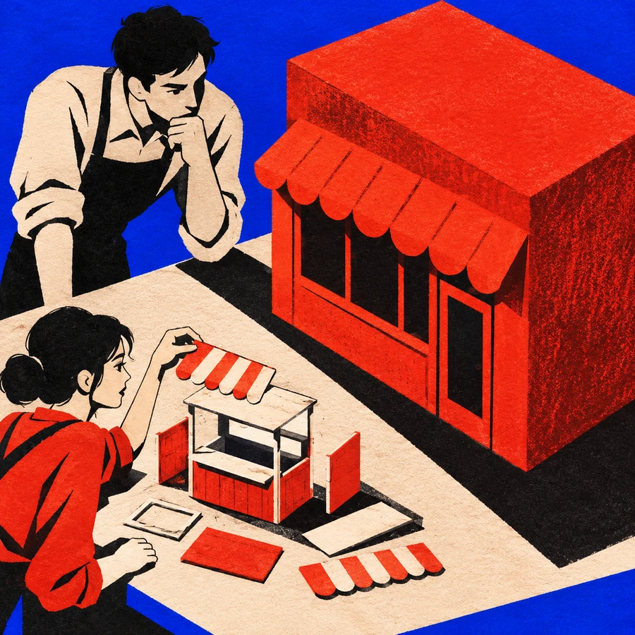
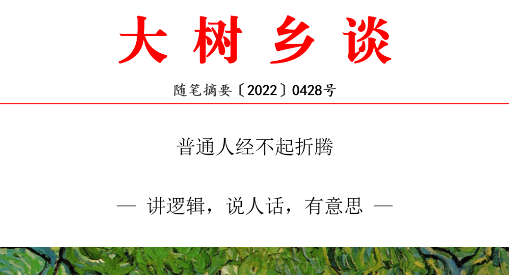

不要拿身家性命试错


这几年工作不好找，有不少年轻人一毕业就失业，待在家里只能考研、考公务员，待久了一直找不到工作，就想着要创业。 小镇平时特别注意观察各种店面，就看到在居住区内部新开了一家饭店，但是生意很差，可以说几乎没人，经常看到几位年轻人坐在一起，一个客人也没有，这应该是几个人合伙创业，但显然应该是第一次。 还有很多新开的店，生意也很不怎么样，尤其是奶茶店、饮品店，还有一些网红食品比如脆皮五花肉等。最近几年疫情，确实对很多行业产生冲击，但小镇很奇怪的发现，开店明显没有进行充分市场调研，选择的开店位置、种类、装修乃至门店大小等等，都非常不专业。
而这种往往是年轻人。 有太多人宁愿赔几十万开一家奶茶店或者其他小店，却不愿意花几个月去打工、摸摸底。 一厢情愿的幻想着不用打工就能养家糊口，把店面装修的非常符合自己心意，买了昂贵的设备、交了昂贵的加盟费，结果没等房租到期就扛不住了。 当然实际打工、摸底再开店也未必能成，现在市场实在太内卷，各种成本也非常高，无论什么店没人带都很难做得起来，毕竟生意如果这么好做，那为啥还有这么多厨师和咖啡师，为啥他们不自己当老板呢？ 毕竟就连开货车，没人帮忙新人都无法注册找货的专门软件，被各种骗子骗的血本无归。
但正因为难，所以更要好好摸底，长辈看着孩子没工作，往往心软，大量的钱就浪费了，甚至还背上债务，这么高的试错成本对普通人来说实在是难以承受。 对普通人来说，还是先好好打工吧，起码把生活的基础搞好，如果在大学的时候自己都不是被称为特别有市场头脑的，没搞点什么小买卖，又或者有独特的东西，还是不要幻想了。
困难的时候，少犯错就是进步。
其他文章推荐
■ 中央部委公务员的待遇与发展
如果喜欢，还请点赞、“在看”和关注吧 欢迎分享，让更多人发现“大树乡谈”